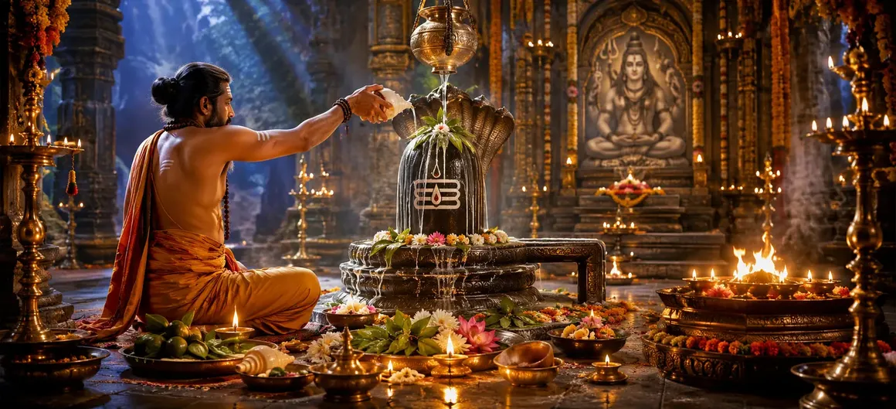

भगवान शिव का अनुष्ठान
वायवीय संहिता का उनतालीसवां अध्याय सीधे भगवान शिव को समर्पित व्यापक अनुष्ठान प्रक्रियाओं की रूपरेखा देता है, जो भक्तों को संरचित पूजा के माध्यम से मार्गदर्शन करता है।
ऋषि वायु गहरी श्रद्धा के साथ सर्वोच्च भगवान का आह्वान, पूजा और ध्यान करने की चरण-दर-चरण पद्धति बताते हैं।
यह अध्याय व्यावहारिक शैव पूजा के लिए एक निश्चित मार्गदर्शिका के रूप में कार्य करता है।
अध्याय 59 की मुख्य बातें
मंगलाचरण चरण
दिव्य उपस्थिति को आमंत्रित करने की शुद्ध विधियाँ।
अभिषेक अनुष्ठान
शिवलिंग का पवित्र स्नान।
सोलह प्रसाद
षोडश उपाचार पूजा करना।
मंत्र जाप
पवित्र मंत्रों का समर्पित पाठ।
होम अर्पण
भगवान शिव को आहुति देना।
आगे का रास्ता
अध्याय 60 में शिव की पूजा की खोज।
इस अध्याय में मुख्य विषय
वेदी की प्रारंभिक शुद्धि और स्वच्छता
ऋषि वायु ने भगवान शिव की पूजा शुरू करने से पहले आवश्यक शारीरिक और मानसिक शुद्धि के बारे में विस्तार से बताया।
वेदी और पूजा स्थान को सावधानीपूर्वक साफ किया जाना चाहिए और पवित्र मंत्रों से पवित्र किया जाना चाहिए।
भगवान शिव की उपस्थिति का आह्वान और स्थापना
भक्त सटीक वैदिक और पौराणिक आह्वान सूत्रों का उपयोग करके भगवान शिव को प्रतिष्ठित छवि या लिंग में आमंत्रित करता है।
पूर्ण ध्यान दैवीय कृपा के अवतरण को सुनिश्चित करता है।
सोलह गुना (षोडश उपाचार) प्रसाद का निष्पादन
अध्याय में सोलह पारंपरिक भक्ति सेवाओं की रूपरेखा दी गई है, जिसमें बैठना, स्वागत करना, स्नान करना, कपड़े पहनना और धूप और दीप अर्पित करना शामिल है।
प्रत्येक भेंट गहन आंतरिक आराधना के साथ की जाती है।
अभिषेक अनुष्ठान और भक्ति अर्चना
जल, दूध, शहद और घी जैसे पवित्र तरल पदार्थों से अभिषेक करने और उसके बाद बिल्व पत्र चढ़ाने पर विशेष जोर दिया जाता है।
बिल्व पत्र भगवान शिव को प्रिय हैं और भक्त के कर्म को शुद्ध करते हैं।
गहन ध्यान और पूर्ण समर्पण
बाह्य अनुष्ठान अर्पण के बाद, अभ्यासी हृदय कमल के भीतर भगवान शिव की कल्पना करते हुए शांत ध्यान में बैठता है।
मन और देवता सामंजस्यपूर्ण रूप से एकीकृत हो जाते हैं।
उचित अनुष्ठान पूजा से प्राप्त आध्यात्मिक फल
लगन से भगवान शिव का अनुष्ठान करने से अशुद्धियाँ दूर हो जाती हैं, मानसिक शांति मिलती है और मोक्ष की ओर अग्रसर होता है।
ईश्वरीय कृपा निष्ठावान अभ्यासकर्ता को घेर लेती है।
अध्याय 60 की ओर (शिव की पूजा)
अध्याय 59 में भगवान शिव के अनुष्ठान को विस्तृत करने के बाद, ऋषि वायु अध्याय 60, 'शिव की पूजा' का वर्णन करने की तैयारी करते हैं।
यह अगला अध्याय भगवान शिव की पूजा के व्यापक दर्शन और अभ्यास पर और विस्तार करेगा।
अध्याय 59 की मुख्य शिक्षाएँ
पवित्र तैयारी
अनुष्ठान से पहले स्थान और शरीर को शुद्ध करना।
दिव्य आह्वान
लिंग में शिव की उपस्थिति स्थापित करना
षोडश उपाचार
पूजा की सोलह गुना पारंपरिक आहुतियाँ।
अभिषेक और बिल्व
पवित्र स्नान और बिल्व पत्र चढ़ाना।
आंतरिक ध्यान
हृदय कमल में भगवान शिव का दर्शन करना।
पूजा प्रस्तावना
अध्याय 60 में शिव पूजा की स्थापना.
आध्यात्मिक चिंतन
भगवान शिव का अनुष्ठान भौतिक और आध्यात्मिक दुनिया को जोड़ता है, भेंट की सामान्य वस्तुओं को दिव्य प्रेम और सर्वोच्च मुक्ति के बर्तन में बदल देता है।
अध्याय 59 का संदेश जीना
भगवान शिव की अपनी दैनिक पूजा को सावधानीपूर्वक ध्यान और अत्यधिक भक्ति के साथ करें।
अभिषेक की प्रत्येक बूंद और प्रत्येक बिल्व पत्र आपके अहंकार के समर्पण का प्रतिनिधित्व करें।
अपने ध्यानमग्न हृदय के शांत अभयारण्य में शांति पाएं।
प्रमुख आध्यात्मिक अवधारणाएँ
भगवान शिव की पूजा के व्यापक शास्त्रीय नियम।
सोलह गुना प्रथागत अनुष्ठान प्रसाद।
पवित्र शिवलिंग का अनुष्ठानिक स्नान।
मंत्रोच्चार के साथ पवित्र बिल्व पत्र चढ़ाएं।
हृदय में भगवान शिव का आंतरिक ध्यान।
भक्ति के माध्यम से प्राप्त परम आध्यात्मिक मुक्ति।
अध्याय सारांश
वायवीय संहिता अध्याय 59 में भगवान शिव के अनुष्ठान का विवरण दिया गया है, जिसमें प्रारंभिक शुद्धि, दिव्य आह्वान, षोडश उपाचार प्रसाद, अभिषेक और आंतरिक ध्यान शामिल है। यह अध्याय अध्याय 60, 'शिव की पूजा' का मार्ग प्रशस्त करता है।
अक्सर पूछे जाने वाले प्रश्न
1. वायवीय संहिता अध्याय 59 का मुख्य विषय क्या है?
अध्याय 59 सीधे भगवान शिव को समर्पित व्यापक अनुष्ठान पूजा प्रक्रियाओं पर केंद्रित है।
2. भगवान शिव की अनुष्ठानिक पूजा में कौन से मुख्य चरण शामिल हैं?
चरणों में अनुष्ठान शुद्धि, मानसिक आह्वान, देवता की स्थापना, मानक प्रसाद (उपचार), मंत्र पाठ और अंतिम समर्पण शामिल हैं।
3. इन अनुष्ठान प्रक्रियाओं को ऋषियों को कौन समझाता है?
ऋषि वायु ने एकत्रित ऋषियों को भगवान शिव के सटीक अनुष्ठान चरणों का विवरण दिया।
4. अध्याय 59 के बाद नेविगेशन के लिए अगला अध्याय कौन सा है?
नेविगेशन के लिए अगले अध्याय का शीर्षक 'शिव की पूजा' है।
"शुद्ध अनुष्ठान और हार्दिक भक्ति के माध्यम से, भगवान शिव की पूजा सभी कर्म बंधनों को पिघला देती है और आत्मा की उज्ज्वल रोशनी को प्रकट करती है।"
वायवीय संहिता के माध्यम से जारी रखें
अध्याय 59 भगवान शिव के अनुष्ठान का समापन करता है। शिव की पूजा जारी रखें.